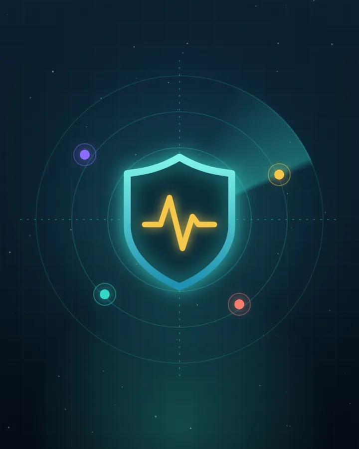
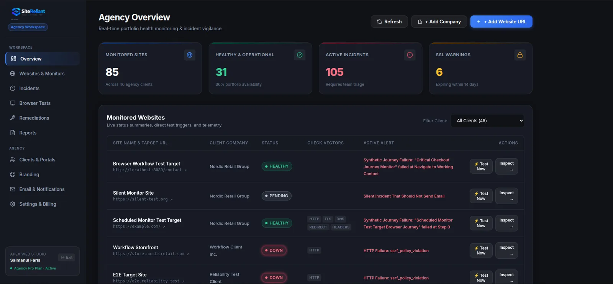
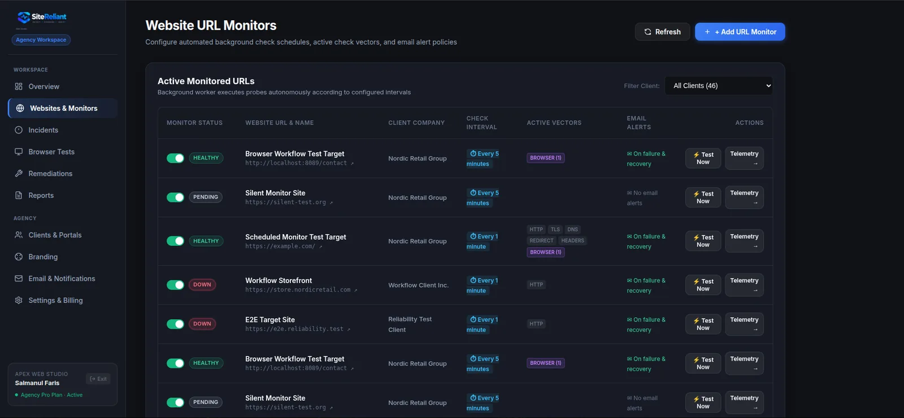

Multi-protocol monitoring
HTTP, HTTPS, TCP, UDP, TLS and SSL certificates, and DNS records, with edge probes validated from three regions.

A 200 response doesn’t mean the checkout works. SiteReliant is a multi-tenant reliability platform for web agencies and DevOps teams: it runs real user journeys in a headless browser, hints at the root cause, and re-tests the fix before an incident is allowed to close.


HTTP, HTTPS, TCP, UDP, TLS and DNS probes, with failure thresholds and flapping suppression.
Root-cause hints and an evidence vault captured when a check fails.
Engineers log the maintenance action directly on the incident.
A re-test probe confirms the issue is truly resolved before the incident closes.
White-label client portals and monthly verifiable SLA reports.
HTTP, HTTPS, TCP, UDP, TLS and SSL certificates, and DNS records, with edge probes validated from three regions.
Headless Chromium runs multi-step journeys such as contact forms, checkout funnels and logins, and asserts DOM content and success states.
Screenshots, DOM state, console errors and network timings are captured on failure, with passwords, cards and tokens masked.
Pinpoints DNS lookup failures, TLS handshake timeouts, upstream 5xx responses and DOM selector mutations.
Per-client branding: logo, primary color and custom domain, with read-only status access.
Monthly uptime summaries with cryptographic timestamps and verified-fix audit logs, ready for client review.
Synthetic tests assert that the page works, not just that it answered.
Remediation probes re-run before closing, which produces indisputable MTTR evidence.
Probes and Chromium runners are sandboxed, with cloud metadata, private subnets, loopback and prohibited ports blocked, and resolved IPs validated to stop DNS rebinding.
Agencies, clients, monitors, incidents and reports are separated, and secrets are encrypted at rest with AES-256-GCM.
Built as a Turborepo monorepo: an API, a dashboard and landing page, a background worker, and shared packages for monitoring, browser monitoring and database access.